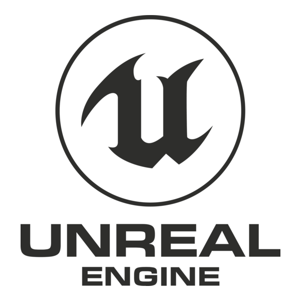

Mes projets et jeux
Voici quelques-uns de mes projets réalisés au cours de mes deux premières années à ISART Digital.

IrisEngine

I Need Healing

objectif:
Développer un jeu jouable sur Switch et l’optimiser.
objectif du jeu:
Protéger notre village contre de nombreux envahisseurs en soignant et en renforçant nos fiers villageois.
tâches réalisées:
- Mouvements et compétences du joueur
- Intégration des sons du joueur
- UI
- Effets et particules
Langages:

Simulation du système solaire